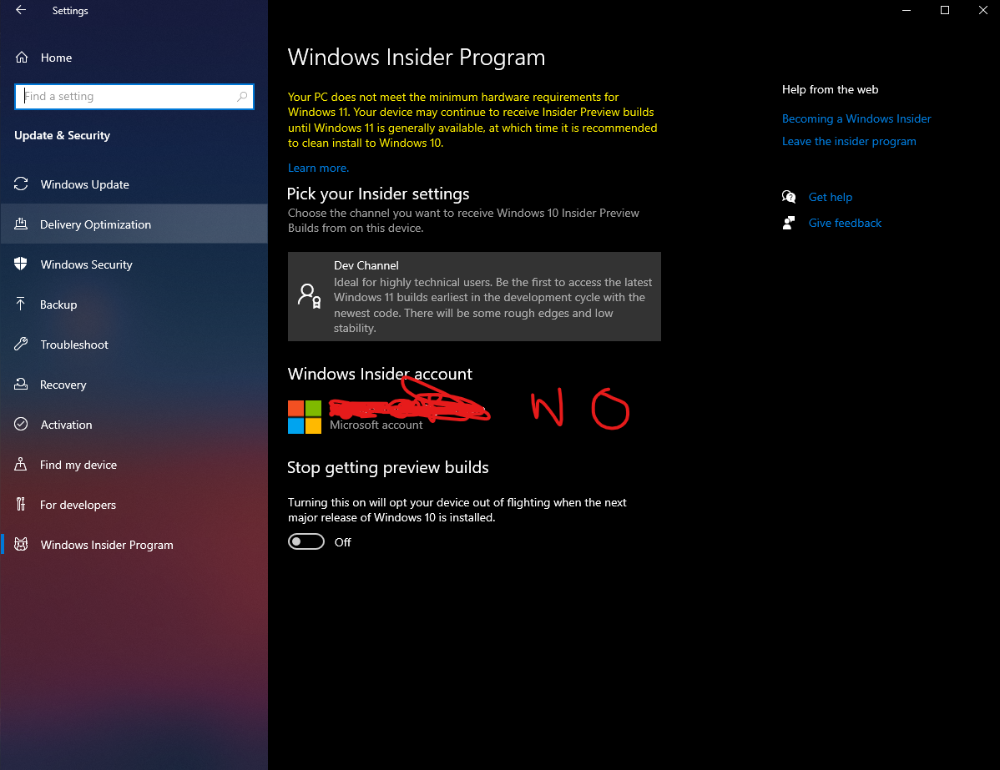

Windows Insider Program
Bypass the system requirements for the Windows Insider Program’s Dev Channel
Use this simple regedit trick to get into the Dev Channel of the Windows Insider Program without meeting the minimum hardware requirements!
Step 1
Go to Settings > Update & Security > Windows Insider Program
Step 2
Join the Windows Insider Program using your Microsoft Account and when prompted to choose a channel, if there’s only a “Release Preview Channel”, just select it for now and after it’s done, restart your PC
Step 3
After Restarting, go to Settings > Update & Security > Windows Insider Program and check if you’re in the Insider Program. If there’s no option for a Dev channel, proceed to Step 4
Step 4
Open your search bar and type regedit and press Enter
Step 5
Navigate to HKEY_LOCAL_MACHINE\SOFTWARE\Microsoft\WindowsSelfHost\UI\Selection
Double click on UIBranch on the right side and change the value from ReleasePreview to Dev
Make sure ContentType is set to Mainline |
Make sure UIRing is set to External
Step 6
Now, in the registry editor, navigate to HKEY_LOCAL_MACHINE\SOFTWARE\Microsoft\WindowsSelfHost\Applicability
Change the BranchName to Dev
Make sure ContentType is set to Mainline
Make sure Ring is set to External
Step 7
You’re done, now close the registry editor and restart your PC
Step 8
After the restart, open Settings > Update & Security > Windows Insider Program and the Dev channel should be selected!
Information Source: WindowsLatest